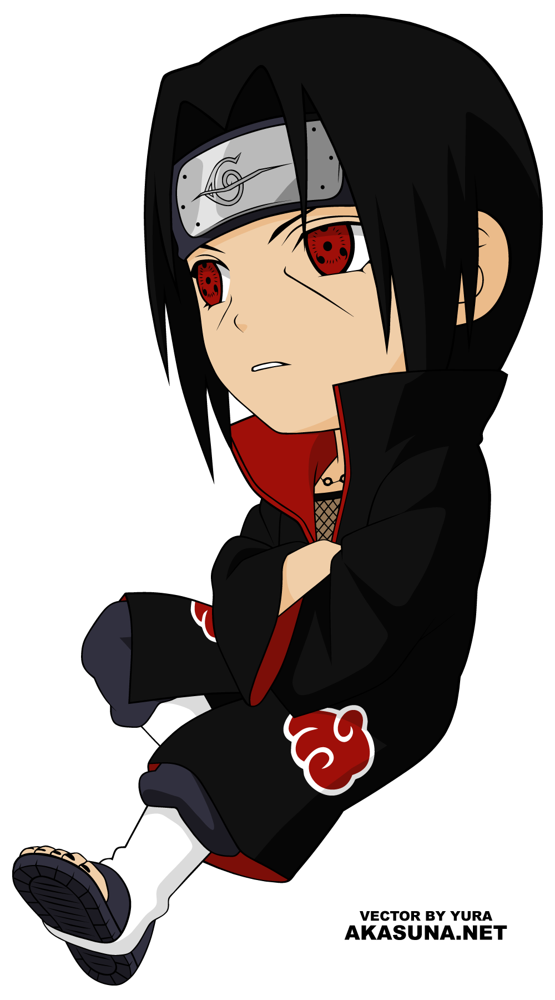

UCHIHA ITACHI
Itachi Uchiha(うちは イタチ Uchiha Itachi?) adalah kakaknya Sasuke yang sangat-sangat-sangat-sangat-sangat aneh. Dia pergi dari desa konohagakure karena dia ketahuan lagi mendandani sasuke uchiha sehingga dia kabur dari konoha naik busway. Saat dia naik busway, dia bertemu dengan Kisame yang lagi Ditodong sanji karena sanji pengen ngambil Gillete Mach three turbonya kisame. Itachi turun dari busway tapi ga bayar karena duitnya dicopet oleh Roy Suryo. Dia langsung membantu kisame melawan sanji Karena dia jatuh cinta sama kisame .Dia menjadi temannya Kisame.Kelebihannya adalah mempunyai mata sharingan yang jauh lebih merah dari keluarganya karena jauh lebih sering terkena timpukan batu dari konan dan pain.